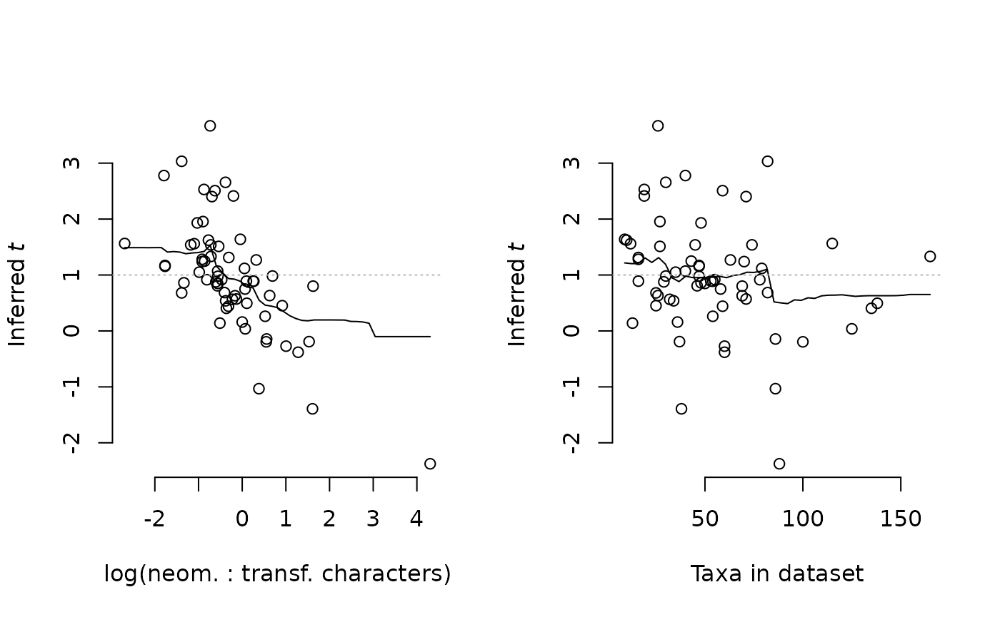
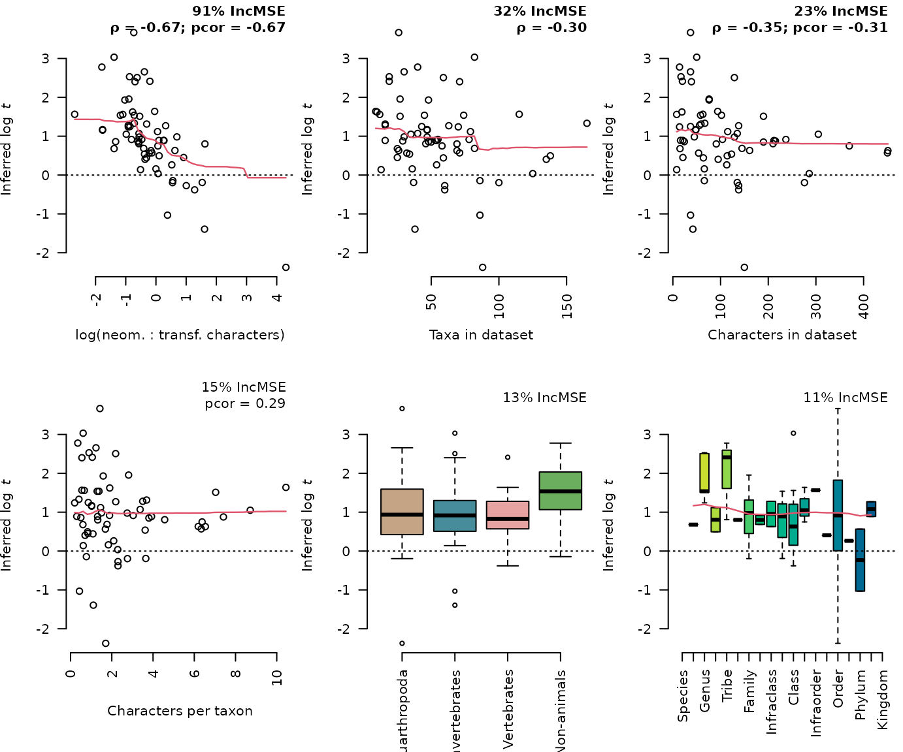
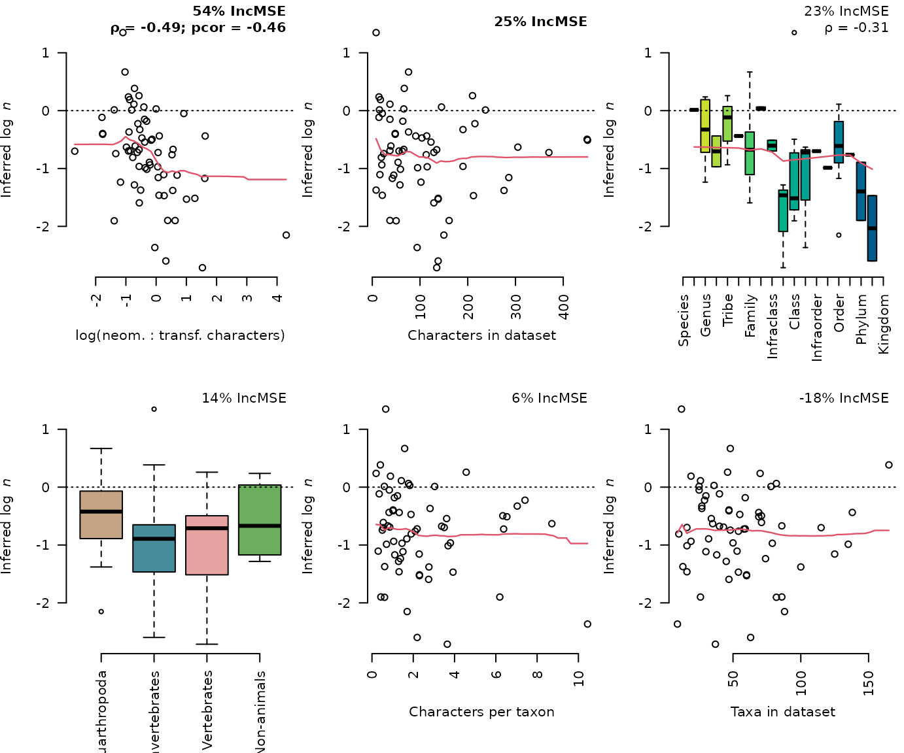
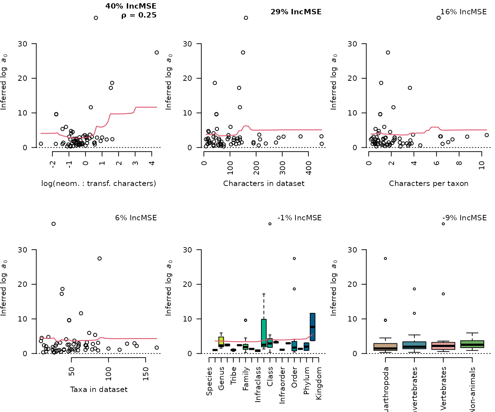
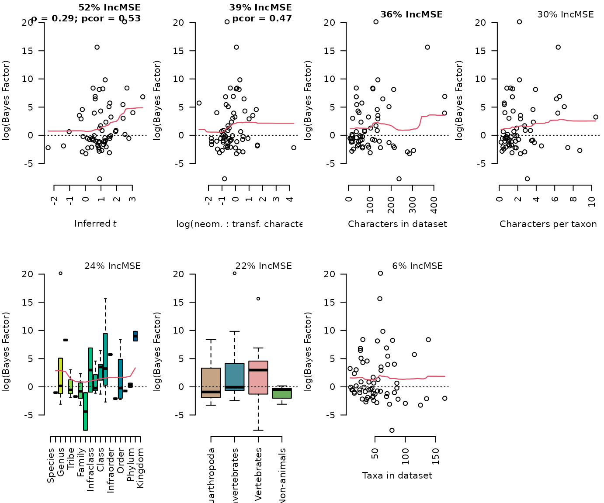
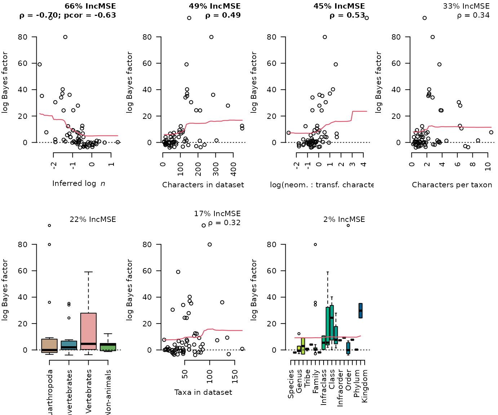
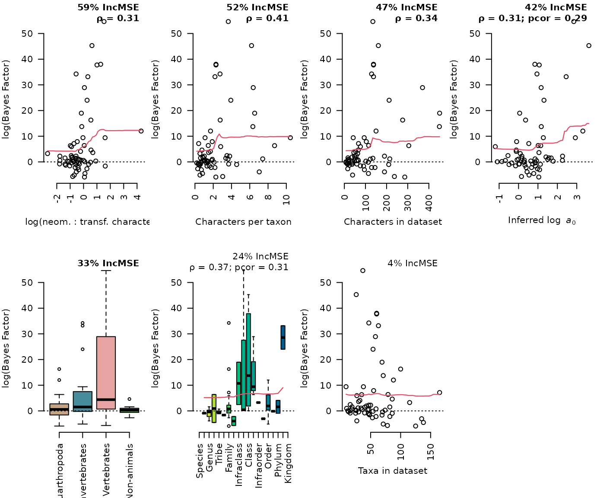
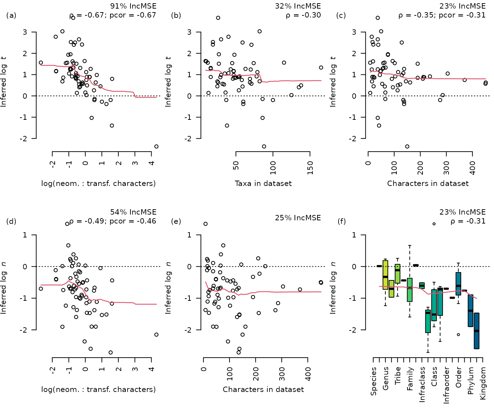

vignettes/predictions.Rmd
predictions.Rmd
suppressPackageStartupMessages(library("randomForest"))
library("neotrans")
predS <- c("by_ki", "by_n_ki", "by_t_ki", "by_nt_ki")
predNS <- c("ns_ki", "ns_n_ki", "ns_nt_ki")
predModels <- c(predS, predNS)
marginals <- GetMarginals(KiProjects(), predModels)
.config <- Config()
.meta <- Metadata()
# Compare estimated values of t
bestTModel <- ifelse(marginals["by_t_ki", ] > marginals["by_nt_ki", ],
"by_t_ki", "by_nt_ki")
tProjects <- names(bestTModel)[!is.na(bestTModel)]
# Estimated value of t using the best available stationary model
stationaryT <- sapply(tProjects, function(pID) {
exRes <- ExistingResults(pID, bestTModel[[pID]], checkRemote = FALSE)
if (exRes[["convergence"]][["ess"]] < .config$essThreshold) {
message("Extending run for ", pID, "_", bestTModel[pID])
MakeSlurm(pID, bestTModel[pID], ml = FALSE)
}
res <- exRes[["parameters"]][, "rate_neo"]
# partition_rate := [ rate_neo / (1 + rate_neo), (1 / (1 + rate_neo)) ]
# MS defines t = rate_t / rate_n
if (is.null(res)) {
message("Need results for ", pID, "_", bestTModel[pID])
RevBayes(pID, bestTModel[pID])
MakeSlurm(pID, bestTModel[pID], ml = FALSE)
setNames(rep(NA, 6), c("2.5%", "25%", "50%", "75%", "97.5%", "mad"))
} else {
# Convert from rate_neo to rate_trans
1 / res
}
})
# Can we predict which projects will benefit from a free t parameter?
tSupport <- marginals["by_t_ki", ] - marginals["by_ki", ]
tnSupport <- marginals["by_nt_ki", ] - marginals["by_n_ki", ]
tModelBF <- ifelse(bestTModel == "by_t_ki", tSupport, tnSupport)
tProj <- names(tModelBF)
tMeta <- data.frame(
tModelBF,
nChar = colSums(.meta$nChar[, tProj]),
nTrans = .meta$nChar["trans", tProj],
nNeo = .meta$nChar["neo", tProj],
logNTRatio = log(.meta$nChar["neo", tProj] / .meta$nChar["trans", tProj]),
charPerTax = colSums(.meta$nChar[, tProj]) / .meta$nTaxa[tProj],
taxon = .meta$taxon[tProj],
rank = .meta$rank[tProj],
nTaxa = .meta$nTaxa[tProj],
tValue = log(t(stationaryT[, tProj]))
)
tPredictors <- c("logNTRatio", "charPerTax", "taxon", "rank", "nTaxa", "nChar",
"tValue.50.")
tVsurfBF <- VSURF::VSURF(tMeta[, tPredictors], tModelBF, verbose = FALSE)
tPredBF <- tPredictors[tVsurfBF[["varselect.pred"]]]
if (!length(tPredBF)) {
tPredBF <- tPredictors[tVsurfBF[["varselect.interp"]]]
}
cat(paste0(tPredBF, collapse = ", "))## tValue.50., nChar, logNTRatio
tRFBF <- randomForest(tMeta[, tPredBF, drop = FALSE], tModelBF,
ntree = 10000, importance = TRUE)
tImp <- importance(tRFBF)
tIncMSE <- tImp[, "%IncMSE"]
nTPred <- length(tPredBF)
par(mfrow = c(1, nTPred))
for (predictor in tPredBF[order(tIncMSE, decreasing = TRUE)]) {
plot(tModelBF ~ tMeta[, predictor], frame.plot = FALSE,
xlab = Decrypt(predictor),
ylab = "log(Bayes Factor)")
EpsLine()
partialPlot(tRFBF, tMeta[, tPredictors], as.character(predictor),
rug = TRUE, add = TRUE)
}
# Can we predict the value of t from the metadata?
metaT <- tMeta[!is.na(tMeta[, "tValue.50."]), ]
t50 <- metaT[, "tValue.50."]
vsurfT <- VSURF::VSURF(metaT[, setdiff(tPredictors, "tValue.50.")], t50, verbose = FALSE)
predT <- tPredictors[vsurfT[["varselect.pred"]]]
# Surprisingly, yes. Why might this be?
message(paste(predT, collapse = ", "))## logNTRatio, nTaxa
rfT <- randomForest(metaT[, predT, drop = FALSE], t50, ntree = 10000,
importance = TRUE)
par(mfrow = c(1, 2))
plot(t50 ~ metaT$logNTRatio, frame.plot = FALSE,
xlab = Decrypt("logNTRatio"),
main = "",
ylab = expression("Inferred" ~ italic("t")))
partialPlot(rfT, metaT, logNTRatio, rug = FALSE, add = TRUE)
abline(h = 1, lty = "dotted", col = "grey70")
plot(t50 ~ metaT$nTaxa, frame.plot = FALSE,
xlab = Decrypt("nTaxa"),
main = "",
ylab = expression("Inferred" ~ italic("t")))
partialPlot(rfT, metaT, nTaxa, rug = FALSE, add = TRUE)
abline(h = 1, lty = "dotted", col = "grey70")
# Compare estimated values of n
bestNModel <- ifelse(marginals["by_n_ki", ] > marginals["by_nt_ki", ],
"by_n_ki", "by_nt_ki")
# Estimated value of n using the best available stationary model
# Strictly, this vector stores 1 / n, i.e. rate_loss not rate_gain
stationaryN <- sapply(KiProjects(), function(pID) {
res <- ExistingResults(pID, bestNModel[pID],
checkRemote = FALSE)[["parameters"]][, "rate_loss"]
if (is.null(res)) {
message("Need results for ", pID, "_", bestNModel[pID])
RevBayes(pID, bestNModel[pID])
MakeSlurm(pID, bestNModel[pID], ml = FALSE)
}
res %||% setNames(rep(NA, 6), c("2.5%", "25%", "50%", "75%", "97.5%", "mad"))
})
n50 <- 1 / stationaryN["50%", ]
nModelBF <- ifelse(bestNModel == "by_n_ki",
marginals["by_n_ki", ] - marginals["by_ki", ],
marginals["by_nt_ki", ] - marginals["by_t_ki", ])
# Which variables predict support for a model with a free n?
nProj <- KiProjects()
nMeta <- data.frame(
nModelBF,
nChar = colSums(.meta$nChar[, nProj]),
nTrans = .meta$nChar["trans", nProj],
nNeo = .meta$nChar["neo", nProj],
logNTRatio = log(.meta$nChar["neo", nProj] / .meta$nChar["trans", nProj]),
charPerTax = colSums(.meta$nChar[, nProj]) / .meta$nTaxa[nProj],
taxon = .meta$taxon[nProj],
rank = .meta$rank[nProj],
nTaxa = .meta$nTaxa[nProj],
inferredN = 1 / t(stationaryN[, nProj]),
inferredLogN = -log(t(stationaryN[, nProj]))
)
nPredictors <- c("nChar", "logNTRatio", "charPerTax", "taxon", "rank", "nTaxa",
"inferredLogN.50.")
nVsurfBF <- VSURF::VSURF(nMeta[, nPredictors], nModelBF, verbose = FALSE)
nPredBF <- nPredictors[nVsurfBF[["varselect.interp"]]]
message(paste0(nPredBF, collapse = ", "))## inferredLogN.50., nChar, logNTRatio
nRFBF <- randomForest(nMeta[, nPredBF, drop = FALSE], nModelBF,
ntree = 10000, importance = TRUE)
nImp <- importance(nRFBF)
nIncMSE <- nImp[, "%IncMSE"]
nNPred <- length(nPredBF)
par(mfrow = c(ceiling(nNPred / 3), min(3, nNPred)))
for (predictor in nPredBF[order(nIncMSE, decreasing = TRUE)]) {
plot(nModelBF ~ nMeta[, predictor], frame.plot = FALSE,
xlab = Decrypt(predictor),
ylab = "log(Bayes Factor)")
EpsLine()
partialPlot(nRFBF, nMeta[, nPredictors], as.character(predictor),
rug = FALSE, add = TRUE)
}
metaN <- nMeta[!is.na(nMeta[, "inferredN.50."]), ]
ln50 <- metaN[, "inferredLogN.50."]
nvPredictors <- setdiff(nPredictors, c("inferredN.50.", "inferredLogN.50."))
vsurfN <- VSURF::VSURF(metaN[, nvPredictors], ln50, verbose = FALSE)
predN <- nPredictors[vsurfN[["varselect.interp"]]]
cat(paste(predN, collapse = ", "))## logNTRatio, nChar, rank
sMarginals <- marginals[sub("ns_", "by_", predNS), ]
nsMarginals <- marginals[predNS, ]
bestS <- apply(sMarginals, 2, which.max)
bestNS <- apply(nsMarginals, 2, which.max)
bestML_S <- marginals[cbind(predS[bestS], colnames(marginals))]
bestML_NS <- marginals[cbind(predNS[bestNS], colnames(marginals))]
stdErr <- attr(marginals, "stdErr")
bestSE_S <- stdErr[cbind(sub("ns_", "by_", predNS)[bestS], colnames(stdErr))]
bestSE_NS <- stdErr[cbind(predNS[bestNS], colnames(stdErr))]
# Take parameter values from the best non-stationary and stationary models
nsModelBF <- bestML_NS - bestML_S |> `names<-`(colnames(marginals))
nullParam <- c(`2.5%` = NA_real_, `25%` = NA_real_, `50%` = NA_real_,
`75%` = NA_real_, `97.5%` = NA_real_, mad = NA_real_)
nsValue <- sapply(seq_along(bestS), function(i) {
ExistingResults(names(bestNS)[i], predNS[bestNS[i]]
)[["parameters"]][, "root_freqs.1."] %||% nullParam
}) |> `colnames<-`(names(bestS))
# Is the median root frequency different from zero?
# For results that include also ns_t_ki, see 5_Parameters.R
# The values there are used for publication
ns50 <- nsValue["50%", ]
a0 <- nsValue / (1 - nsValue)
# Can we predict which projects will benefit from a non-stationary model?
nsProj <- intersect(colnames(marginals), names(bestS)[!is.na(nsValue[1, ])])
metaA <- data.frame(
nsModelBF = nsModelBF[nsProj],
nChar = colSums(.meta$nChar[, nsProj]),
nTrans = .meta$nChar["trans", nsProj],
nNeo = .meta$nChar["neo", nsProj],
logNTRatio = log(.meta$nChar["neo", nsProj] / .meta$nChar["trans", nsProj]),
charPerTax = colSums(.meta$nChar[, nsProj]) / .meta$nTaxa[nsProj],
rank = .meta$rank[nsProj],
taxon = .meta$taxon[nsProj],
nTaxa = .meta$nTaxa[nsProj],
# nsValue = t(nsValue[, nsProj]), --> a0Value
inferredA0.50. = nsValue["50%", nsProj] / (1 - nsValue["50%", nsProj]),
inferredLogA0.50. = log(nsValue["50%", nsProj] / (1 - nsValue["50%", nsProj]))
)
aPredictors <- c("nChar", "logNTRatio", "charPerTax", "rank",
"taxon", "nTaxa", "inferredLogA0.50.")
avPredictors <- setdiff(aPredictors, "inferredLogA0.50.")
a50 <- metaA[, "inferredA0.50."]
la50 <- metaA[, "inferredLogA0.50."]
vsurfA <- VSURF::VSURF(metaA[, avPredictors], la50, verbose = FALSE)
predA <- aPredictors[vsurfA[["varselect.interp"]]]
aVsurfBF <- VSURF::VSURF(metaA[, aPredictors], nsModelBF, verbose = FALSE)
aPredBF <- aPredictors[aVsurfBF[["varselect.interp"]]]## [1] "logNTRatio" "nTaxa"
metaTVPred <- metaT[, tvPredictors]
prfTV <- randomForest(metaTVPred, t50, ntree = 10000, importance = TRUE)
OutputPlot("predict_t_val", 7.2, 6, function() {
par(mfrow = c(2, 3), mar = margins)
for (predictor in tvPredictors[order(importance(prfTV)[, "%IncMSE"],
decreasing = TRUE)]) {
PredictWith(metaTVPred, predictor, t50, prfTV, predictor %in% predT,
expression("Inferred log " ~ italic("t")))
}
})## logNTRatio: Correlated (p = 2.3e-10): Spearman's rank correlation rho ~ -0.69## ... Correlated (p = 1.1e-09): pcor ~ -0.69## nTaxa: Correlated (p = 0.014): Spearman's rank correlation rho ~ -0.31## ... No significant partial correlation## nChar: Correlated (p = 0.0058): Spearman's rank correlation rho ~ -0.34## ... Correlated (p = 0.022): pcor ~ -0.3## Warning in xy.coords(x, y): NAs introduced by coercion## taxon: No significant correlation## charPerTax: No significant correlation## ... Correlated (p = 0.029): pcor ~ 0.28## rank: No significant correlation## ... No significant partial correlation
predN## [1] "logNTRatio" "nChar" "rank"
metaNVPred <- metaN[, nvPredictors]
prfNV <- randomForest(metaNVPred, ln50, ntree = 10000, importance = TRUE)
OutputPlot("predict_n_val", 7.2, 6, function() {
par(mfrow = c(2, 3), mar = margins)
for (predictor in nvPredictors[order(importance(prfNV)[, "%IncMSE"],
decreasing = TRUE)]) {
PredictWith(metaNVPred, predictor, ln50, prfNV, predictor %in% predN,
expression("Inferred log " ~ italic("n")))
}
})## logNTRatio: Correlated (p = 3.2e-05): Spearman's rank correlation rho ~ -0.5## ... Correlated (p = 0.00019): pcor ~ -0.46## nChar: No significant correlation## ... No significant partial correlation## rank: Correlated (p = 0.013): Spearman's rank correlation rho ~ -0.31## ... No significant partial correlation## Warning in xy.coords(x, y): NAs introduced by coercion## taxon: No significant correlation## charPerTax: No significant correlation## ... No significant partial correlation## nTaxa: No significant correlation## ... No significant partial correlation
predA## [1] "logNTRatio" "nChar"
metaAVPred <- metaA[, avPredictors]
prfAV <- randomForest(metaAVPred, a50, ntree = 10000, importance = TRUE)
OutputPlot("predict_a_val", 7.2, 6, function() {
par(mfrow = c(2, 3), mar = margins)
for (predictor in avPredictors[order(importance(prfAV)[, "%IncMSE"],
decreasing = TRUE)]) {
PredictWith(metaAVPred, predictor, a50, prfAV, predictor %in% predA,
expression("Inferred log " ~ italic("a")[0]))
}
})## logNTRatio: Correlated (p = 0.045): Spearman's rank correlation rho ~ 0.25
## ... No significant partial correlation## nChar: No significant correlation## ... No significant partial correlation## charPerTax: No significant correlation## ... No significant partial correlation## nTaxa: No significant correlation## ... No significant partial correlation## rank: No significant correlation## ... No significant partial correlation## Warning in xy.coords(x, y): NAs introduced by coercion## taxon: No significant correlation
tPredBF## [1] "tValue.50." "nChar" "logNTRatio"
metaTPred <- metaT[, tPredictors]
tPredBF## [1] "tValue.50." "nChar" "logNTRatio"
prfT <- randomForest(metaTPred, tModelBF, ntree = 10000, importance = TRUE)
OutputPlot("predict_t_bf", 7.2, 5, function() {
par(mfrow = c(2, 4), mar = margins)
for (predictor in tPredictors[order(importance(prfT)[, "%IncMSE"],
decreasing = TRUE)]) {
PredictWith(metaTPred, predictor, tModelBF, prfT, predictor %in% tPredBF,
ylab = "log(Bayes Factor)")
}
})## tValue.50.: Correlated (p = 0.0096): Spearman's rank correlation rho ~ 0.32## ... Correlated (p = 1.2e-06): pcor ~ 0.58## logNTRatio: No significant correlation## ... Correlated (p = 3.3e-05): pcor ~ 0.51## nChar: No significant correlation## ... No significant partial correlation## charPerTax: No significant correlation## ... No significant partial correlation## rank: No significant correlation## ... No significant partial correlation## Warning in xy.coords(x, y): NAs introduced by coercion## taxon: No significant correlation## nTaxa: No significant correlation## ... No significant partial correlation
metaNPred <- metaN[, nPredictors]
prfN <- randomForest(metaNPred, nModelBF, ntree = 10000, importance = TRUE)
nPredBF## [1] "inferredLogN.50." "nChar" "logNTRatio"
OutputPlot("predict_n_bf", 7.2, 5, function() {
par(mfrow = c(2, 4), mar = margins)
for (predictor in nPredictors[order(importance(prfN)[, "%IncMSE"],
decreasing = TRUE)]) {
PredictWith(metaNPred, predictor, nModelBF, prfN, predictor %in% nPredBF,
ylab = "log(Bayes Factor)")
}
})
## inferredLogN.50.: Correlated (p = 0): Spearman's rank correlation rho ~ -0.7## ... Correlated (p = 1.7e-07): pcor ~ -0.62## nChar: Correlated (p = 4.4e-05): Spearman's rank correlation rho ~ 0.49## ... No significant partial correlation## logNTRatio: Correlated (p = 4.4e-06): Spearman's rank correlation rho ~ 0.54## ... No significant partial correlation## charPerTax: Correlated (p = 0.0062): Spearman's rank correlation rho ~ 0.34## ... No significant partial correlation## Warning in xy.coords(x, y): NAs introduced by coercion## taxon: No significant correlation## nTaxa: Correlated (p = 0.009): Spearman's rank correlation rho ~ 0.32## ... No significant partial correlation## rank: No significant correlation## ... No significant partial correlation
metaAPred <- metaA[, aPredictors]
prfA <- randomForest(metaAPred, nsModelBF, ntree = 10000, importance = TRUE)
aPredBF## [1] "logNTRatio" "charPerTax" "nChar"
## [4] "inferredLogA0.50." "taxon"
OutputPlot("predict_a_bf", 7.2, 5, function() {
par(mfrow = c(2, 4), mar = margins)
for (predictor in aPredictors[order(importance(prfA)[, "%IncMSE"],
decreasing = TRUE)]) {
PredictWith(metaAPred, predictor, nsModelBF, prfA, predictor %in% aPredBF,
ylab = "log(Bayes Factor)")
}
})
## logNTRatio: Correlated (p = 0.009): Spearman's rank correlation rho ~ 0.32
## ... No significant partial correlation## charPerTax: Correlated (p = 0.00083): Spearman's rank correlation rho ~ 0.41## ... No significant partial correlation## nChar: Correlated (p = 0.0053): Spearman's rank correlation rho ~ 0.34## ... No significant partial correlation## inferredLogA0.50.: Correlated (p = 0.012): Spearman's rank correlation rho ~ 0.31## ... Correlated (p = 0.024): pcor ~ 0.29## Warning in xy.coords(x, y): NAs introduced by coercion## taxon: No significant correlation## rank: Correlated (p = 0.0034): Spearman's rank correlation rho ~ 0.36## ... Correlated (p = 0.023): pcor ~ 0.3## nTaxa: No significant correlation## ... No significant partial correlation
OutputPlot("predicting_nt", 7.2, 6, function() {
par(mfrow = c(2, 3), mar = margins)
panel <- 0
for (predictor in tvPredictors[order(importance(prfTV)[, "%IncMSE"],
decreasing = TRUE)][1:3]) {
PredictWith(metaTVPred, predictor, t50, prfTV, FALSE,
expression("Inferred log " ~ italic("t")))
Panel(panel <- panel + 1)
}
for (predictor in nvPredictors[order(importance(prfNV)[, "%IncMSE"],
decreasing = TRUE)][1:3]) {
PredictWith(metaNVPred, predictor, ln50, prfNV, FALSE,
expression("Inferred log " ~ italic("n")))
Panel(panel <- panel + 1)
}
})## logNTRatio: Correlated (p = 2.3e-10): Spearman's rank correlation rho ~ -0.69## ... Correlated (p = 1.1e-09): pcor ~ -0.69## nTaxa: Correlated (p = 0.014): Spearman's rank correlation rho ~ -0.31## ... No significant partial correlation## nChar: Correlated (p = 0.0058): Spearman's rank correlation rho ~ -0.34## ... Correlated (p = 0.022): pcor ~ -0.3## logNTRatio: Correlated (p = 3.2e-05): Spearman's rank correlation rho ~ -0.5## ... Correlated (p = 0.00019): pcor ~ -0.46## nChar: No significant correlation## ... No significant partial correlation## rank: Correlated (p = 0.013): Spearman's rank correlation rho ~ -0.31## ... No significant partial correlation